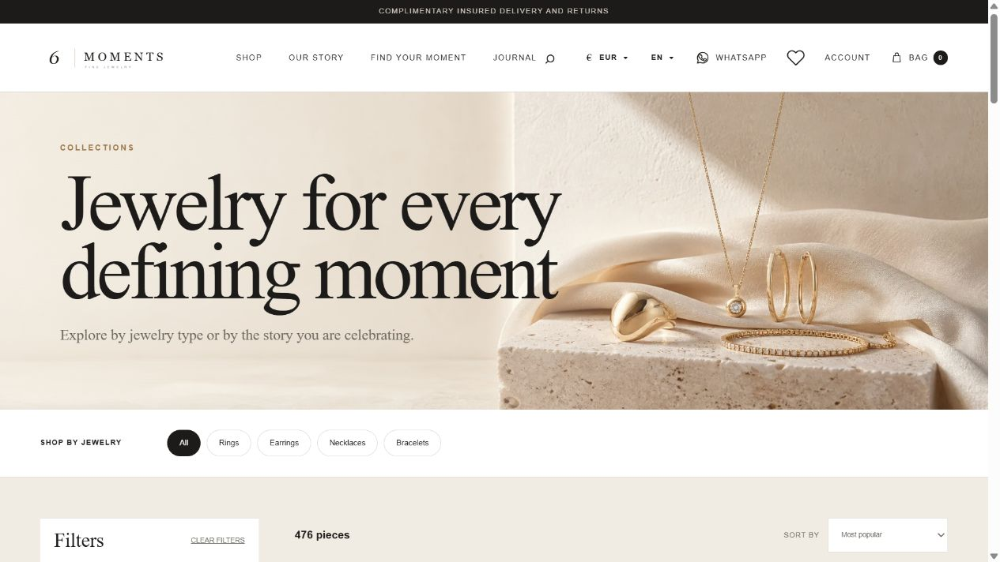
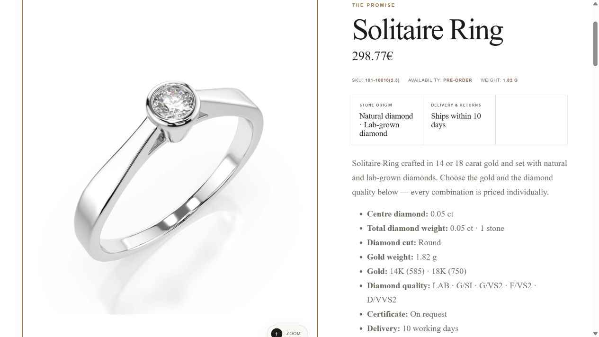
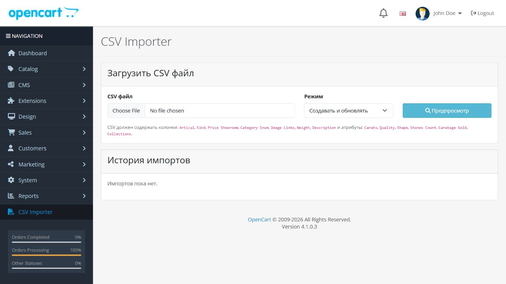
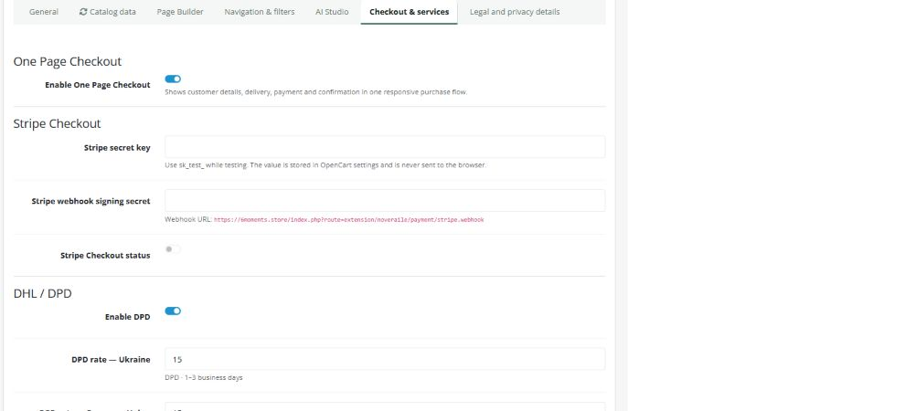
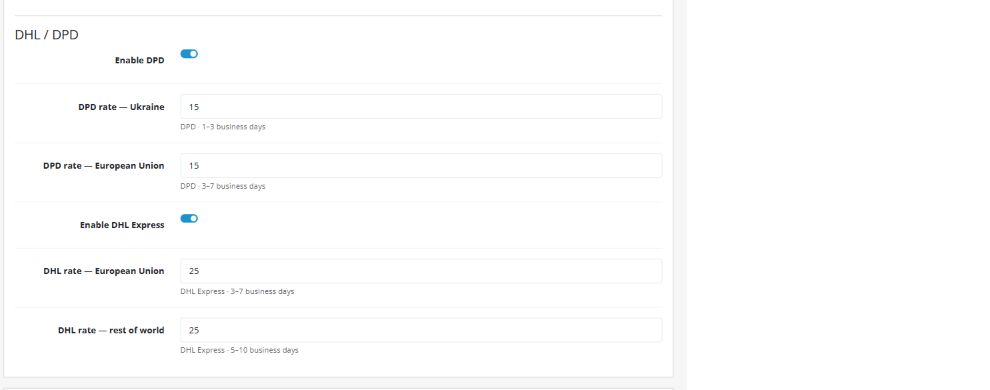
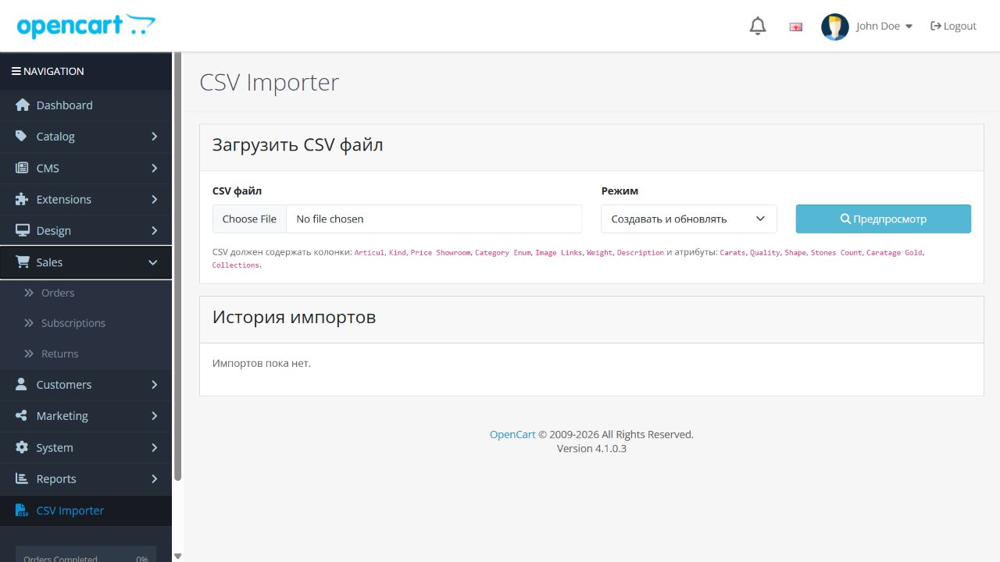

Белый фон каталога и хедера
Базовый фон магазина, шапка, каталог, карточки и область изображения приведены к чистому белому. Товар отображается без бежевой подложки.
Правки от 21.08 · обновлено 31.08.2026
Статус восьми пунктов, ответы на вопросы и инструкции по управлению каталогом, ценами, оплатой, доставкой и заказами.
Основной маршрут администратора
Документ «Правки, вопросы»
Для каждого пункта указан результат, ответ на вопрос и расположение функции в системе.
Базовый фон магазина, шапка, каталог, карточки и область изображения приведены к чистому белому. Товар отображается без бежевой подложки.
Администратор может скачать шаблон, экспортировать резервную копию и загрузить UTF-8 CSV. Импорт умеет создавать товары и безопасно обновлять существующие по ID или артикулу.
Открыть инструкцию →Вкладка Catalog data получила поле Catalog price coefficient. Значение 3 означает: цена из CSV × 3. Коэффициент применяется к вариантам, фильтру цен, корзине и итоговой сумме.
Как изменить →В карточках каталога и на странице товара выводятся Total carat weight и Stones. Данные берутся из структурированных характеристик; старый импорт восстановлен без повторной загрузки каталога.
Фото показывается целиком на белом холсте. В полноэкранном просмотре есть стрелки назад/вперёд, клавиши ← →, увеличение колёсиком и перетаскивание увеличенного изображения.
Активированный аккаунт Stripe, серверный ключ sk_test_… или sk_live_…, webhook-секрет whsec_… и один тестовый платёж.
Каждый заказ сохраняется в OpenCart → Sales → Orders. Stripe хранит платёж, а OpenCart — состав заказа, покупателя, доставку и статус. Почтовое уведомление зависит от настройки почты магазина.
Где смотреть →Ссылки в меню, на главной и в хлебных крошках переведены на стабильный каталог с фильтром по категории. Ошибочные SEO-маршруты OpenCart больше не используются.
Скриншоты для ориентира


Управление магазином
Articul, Kind, Price Showroom, Category Enum, Image Links, Weight, Description. Поддерживаются также Carats, Quality, Shape, Stones Count, Caratage Gold и Collections.
Оплата
Настройку лучше сначала пройти в test mode и только затем заменить ключи на live.
В Stripe заполнить данные бизнеса, подтвердить владельца и добавить банковский счёт для выплат.
Stripe Dashboard → Developers / API keys. Для теста нужен sk_test_…. Ключ pk_test_… сюда не подходит.
Workbench → Webhooks → Add destination. Событие: checkout.session.completed. Endpoint:
https://6moments.store/index.php?route=extension/noveraile/payment/stripe.webhook
NOVERAILE → Checkout & services: вставить Secret key и whsec_…, включить Stripe Checkout status, сохранить.
Карта 4242 4242 4242 4242, любая будущая дата и CVC. Проверить Payment, webhook с ответом 2xx и новый заказ в OpenCart.
Создать отдельные live key и live webhook, заменить оба секрета и провести небольшой реальный заказ.

sk_live_… и whsec_… в чат и не добавляйте их в GitHub.Логистика
Тарифы вводятся в базовой валюте магазина. Ноль означает бесплатную доставку.

После оформления
Товары, контакты и доставка фиксируются OpenCart.
Webhook сообщает магазину об успешной сессии.
OpenCart → Sales → Orders.

Работать с заказом нужно в OpenCart → Sales → Orders. В Stripe проверяется платёж и делается возврат. Письмо на адрес магазина отправляется только при корректно настроенной почте в System → Settings → Mail.
Контроль перед запуском